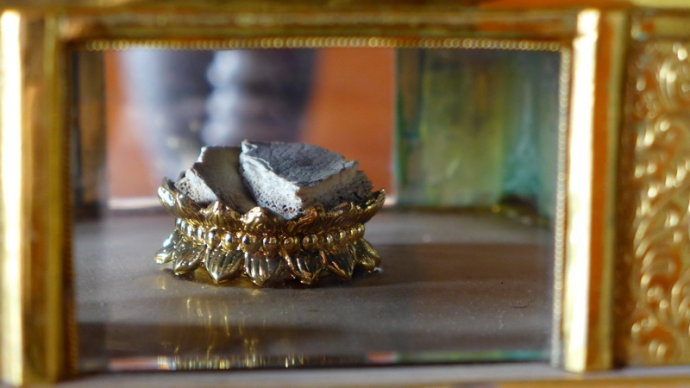

加载中…
加载中…


标签：
佛学玄奘法师刺史寺庙取经 |
分类： 穿越时空悟因果 |
小西游-陪玄奘大师去取经
四大名著之一《西游记》小说想必全中国很少有人没看过的，即使没有看过书，每逢寒暑假时各大电视台重复播放的连续剧以及之后各种改编翻拍的电视剧、电影大家也都一定不会陌生的，其实说实话，小妍就是属于没有看过原书的那种（见书就困综合症，嘿嘿），所有对于《西游记》的记忆全部是出于电视剧、动画片、小时候的讲故事磁带。其中最爱的就是孙悟空了，觉得孙悟空上天入地，七十二般变化，一路降妖除魔，保护师父唐三藏去西天求取真经太厉害了，简直就是超级偶像，对剧中时时需要他们保护又同情心泛滥的唐三藏法师反而产生了过于懦弱的感觉，这些就是对《西游记》所传递出的信息的最初感受了。
其实真正的西游记并非如吴承恩所写的那样的，唐代的玄奘法师在当时的历史条件下步行去古代印度取经的历程是历经艰辛困难非常不容易的，当年玄奘法师从印度带回600多部经书，而其中只有七十多部被翻译了出来，流通于世，还有剩下很多，被保存在他处，至今还未面世。所以，佛所宣说的很多内容我们现在人还没有足够的福报可以更多得见，但是小妍相信这些由玄奘法师历经艰辛从印度带回的经书总有一日全部面世、全部译出，并且流通于世，到那时，对于全人类的知见将又是一次质的飞跃和大刷新。
今次，小妍就决定穿越到当时，随着玄奘法师一起去体验一次艰辛，稍稍还原一下真正的西游记，了解一下当时玄奘法师取经过程中的一些事情。说走咱就走~Go go go~~。
小妍很快就穿越来到了繁华的唐朝，此时我站在了一座唐代的寺庙前，这是一座相当唐式风格的寺庙，我沿着寺庙前的小路走着，不知不觉的来到了寺庙的一侧的小门，这小门并没有关，也无人把守，于是便从小门走了进去，进入到了这座寺庙之中，发现这是这座寺庙的一个寮房区，这里树木郁郁葱葱，树木下面还有一层密密的青草，间中还种有一些鲜花来点缀，非常的好看。我走到栏杆旁用手摸了摸这古色古香的木栏杆，哇，一点灰尘都没有，干干净净的，而且这唐朝的空气也真是好，天空蓝蓝的，宁静又舒心，真是不想走啊。话说小妍从踏进这间寺院的门开始就整个被包围在了浓浓的书卷气中，顿时也觉得自己从女汉子范变身成文艺范了。
小妍在这座寺庙中闲逛了一圈，不知不觉的来到了大殿，我进到大殿中顶礼殿中的佛像，这唐朝的佛像与我们现如今看到的佛像从形制上看也有不同，但是这些并不是重点，因为佛菩萨本来就是无相的。我顶礼完佛像后，便又沿着寺庙中的道路行走着，顺便又吸收了这寺庙中的正能量，哈哈。到现在为止小妍还没有找到玄奘法师，于是小妍启动快进模式，这时时间已经到了后半夜，我来到了在寺庙中的一间寮房前，只见这寮房中发着昏黄的油灯的灯光，我进入到了寮房中，这间寮房是一间单人的寮房，屋子里的摆设超级简单，屋子里醒目的地方便是在桌上整齐的堆放了很多经书、各类书籍及读看手记等等。在油灯之下有一位年轻的僧人正在那一明一暗的灯光下一边翻阅着佛书，一边还时不时的微叹着气，像是正在阅读的这些经书无法解答他心中的疑惑一般，这时他右手微微的托起下巴，陷进了沉思中，不知在思考着什么。我想这位应该就是小妍今天要找的人----玄奘大师了。
玄奘大师长得非常清秀，有一双炯炯有神的眼睛，身材高瘦，从寮房中堆满的各类书籍来看，这时的玄奘法师已经是一位非常博学的人了。
这天，只见玄奘法师在寮房内整理经书及一些随身物品，并把这些都进一个木质的大架子里，看这个架势像是要出远门的样子，当收拾停当后，玄奘法师背起这个木架子，来到了寮房西墙上挂着的一幅彩绘观音菩萨像前深深的三顶礼后默默的发愿，然后背着这个大架子走出了房门。玄奘法师走的是寺院中的一条幽静小路，几乎没有什么人，这条小路通向我来时的那个侧门，当玄奘法师快要走出寺院门时，他回头再细细的看了一次寺院，便头也不回大步的朝前走去了，此时玄奘法师脸上满满的都是坚定。
小妍随着法师来到了长安的街道，这街道在当时来说是非常繁华的，街上百姓、商贾、小贩等等人来人往，很热闹。玄奘法师虽然一身灰色的僧服，但是在人群中还是比较突兀的。法师独自一人走到长安的城门处，这时真巧迎面又走来一位出家人，看那样子也应该是相识的，双方互相行礼之后，两人便一起走出了长安城。
由于法师当时已经非常有名，每到一处便有当地寺院盛情邀请法师开坛讲法，所以法师这时一路前行一路弘法，真是好殊胜好赞叹。~
就这样玄奘法师终于来到了西行的第一个关口---凉州关口，由于当时的朝廷颁布法令不允许包括僧人在内的任何百姓私自出关，所以在第一个关口处，玄奘法师就遇到了阻挠。
小妍随着法师来到凉州边关，法师一到这里，就被守关的士兵拦了下来，其中一位士兵口气很不客气的问到：“你从何处来，又打算去往何处？”
法师一点也不计较这些，如实的回答道：“我乃京城僧人玄奘，想通此关去往天竺求法，望请通融。”
这位守城的士兵，见法师相貌仪表非凡，语气坚定又圆融，那语气稍稍的变软回答道：“你若没有通令，就是私自出关，我等不可以放你，还是请回吧，不要浪费功夫了。”
玄奘法师仍然坚持，对这位士兵说道：“烦请请示下刺史大人，我今次西行，也是为当今圣上、大唐百姓而去，并非为私，请通融放我出关吧。”
这位士兵见玄奘法师坚持这不肯返回，便只好去向凉州的刺史汇报。这位凉州刺史，是一位粗人，有个大大的将军肚，还有长了一脸黑黑的胡子，这位刺史听完士兵汇报，他非常不耐烦，直接下令道：“朝上有明令，一律不可出关，遣其返京，决不可通融。”
守城的士兵得到了刺史的命令后，也直接回绝了玄奘法师，要求其速速回京。被拒绝通关的法师脸上露出了失望的神情，但有不能强硬闯关，于是便只能转身回到凉州城中借宿的一家寺院中，重新计议，看到这里，小妍也好紧张呀，原来小说里的唐太宗亲自颁发通关文牒这样的情节真的都是假的呀，玄奘法师出关口的第一步都是那么的艰难了，这注定是一场艰辛的取经之行啊，我们真的更加要珍惜法师取回并翻译出来的那些佛经。
当晚，被遣返的玄奘法师有些失落，天空中月朗星稀，玄奘法师抬头呆呆的望着天上的月亮许久，心中充满惆怅。由于之前法师与这家寺院中的住持聊起过自己要西去取经的宏愿，当时老住持就非常佩服法师的愿力，也十分支持玄奘法师西行。老住持看到今日法师通关未成，又返回了寺庙中，于是便决定派自己寺院中的两位僧人护法师从小路穿行来通过这凉州关口。
这两位僧人带着玄奘法师，走过街道进入长满杂草、树木的山林，再从山林穿行到大路上去，由于怕被凉州的士兵发现法师的行踪，于是只能冒夜前进。就这样停停走走的走了好久，终于顺利的走出了凉州关口，来到了下一站：瓜州。这时小妍终于也松了一口气，真是不容易啊不容易。
和玄奘法师一起来到瓜州城中，啊呀，这个地方真是好干燥，这里的人们的皮肤看上去都有些干干的，这里的街道就和长安也大不同，由于天气比较干燥，街上的尘土也相对较多，人们穿着衣服的面料也多以粗布为主，街上有很多贩水果的小贩，他们卖的水果中很大部分是那种看上去长得和我们现在吃的哈密瓜类似那种瓜，不知道这个瓜是不是当地的特产。由于我是隐身的，所以我大摇大摆的走到其中一个水果摊上，深深的闻了一下那蜜瓜的味道，哇，散发着清香的甜甜的味道。”真是口水都快下来了，幸好我用了隐身术，所以自然也不用怕流口水的样子被人家看到了，可以尽情的多闻一会这甜甜的瓜了，闻久了真有想深深的咬下一口的冲动啊。
当我沉浸在这小贩贩卖的瓜的香甜味中的时候，玄奘法师都快要走远了，幸好小妍我及时发现并立即跟了上去，不然又要重新定位啦。
那两位老住持派来护送法师的僧人把法师护送到瓜州后，还只剩下其中的一位还跟随着玄奘法师，他们来到了瓜州关口，玄奘法师对守城的士兵讲明了来意说自己想要出关，由于不许私自出关是全国命令，守关的士兵哪里敢私自放行，但是看着法师是一位出家人，不能不恭敬，于是这位守关的士兵便去通报了瓜州的刺史，小妍跟着那士兵来到那瓜州刺史办公的地方听听情况，一进屋就看见一位正在伏案写着东西的中年男人，身材较瘦，这位瓜州刺史和那凉州刺史最明显不同的地方就是瓜州刺史是一位读书人，身上更多的散发了读书人的气质。
士兵：“刺史大人，有一位出家法师，说想要出关弘法，想让我们放行，属下不敢私自放行，特禀报大人，望大人决断。”
当瓜州刺史听到士兵汇报后，立刻放下了手中的笔，请士兵去请玄奘法师进来。这位士兵便恭敬的去请了玄奘法师。
法师跟着士兵来到了瓜州刺史处，瓜州刺史一见到法师便恭敬的合十敬礼，请玄奘法师上座并奉上了茶，从这一系列的举动来看，这瓜州刺史也是一位学佛之人，对出家人十分尊敬。
刺史问玄奘法师道：“法师此来是为何事呢？又是要去往何处呢？”
玄奘法师：“不瞒大人，此次是为想从此出关，至天竺求法去而来请刺史大人通融出关。我大唐虽佛教颇为兴盛，但从佛法传入以来所得佛法甚少乃无量佛法之一角也，依现有经书而解，无法了悟佛陀所说的佛法真谛，故而要去天竺再求真经，若此行能顺利求得佛法后归国，定能饶益我大唐无量众生。”
刺史一听玄奘法师如此大的宏愿，顿时心生无尽的敬佩，说道：“法师，听你宏愿真是与常人不同，我作为佛弟子，本是要竭力护持，与你行方便的，但是现在有此禁令，即使你从我处出关，前面还有玉门关及五座烽火台，也不是易事啊。”
这时，玄奘法师也忧愁的陷入了沉思中。于是决定在瓜州暂作停留等待时机，就在玄奘法师在此处停留的时候，前方凉州送来的追捕玄奘法师的通缉令也来到了这里。这天一位士兵匆匆的送来一份文书，跑到刺史面前：“大人，不好了。”刺史：“什么不好了？不可胡说。”士兵：“大人，您看，这通缉文书上的人是谁？”刺史大人打开通缉令，顿时大惊，心想：“这不就是正在瓜州停留的这位法师吗？”刺史让士兵退下，把通缉令平摊在书桌上，深深的思考又思考了一番。
瓜州刺史经过了一番思考后，夜里，他来到了法师的暂住处。玄奘法师此时正在研究经律，见到刺史前来，心中一喜，心想：必是通关之事有了起色。”法师便起身迎接，这时瓜州刺史把一份文书递到了玄奘法师面前，法师接过文书，打开一看，竟是自己的通缉令，心里顿时凉了半截，然而这位刺史却说道:“想必这位偷偷私自出关的玄奘法师便是您吧？我本因按通缉令将你遣返，但是本官第一次见到法师，就已经被法师的宏愿所感动，所以我早已决定无论如何也会放法师出关，所以未免夜长梦多，还请法师早日动身。”这位刺史一边说着，一边撕掉了这份文书，玄奘法师看到了刺史的这一举动非常感动，对刺史表示了无尽的感激，遂立即收拾行囊，准备出发。
看到这里，真的为玄奘法师捏了一把汗，还没有走出国门已经惊险万分了，虽然处处是障碍，但又可以突然柳暗花明，真是佛力加持啊~我们平时遇到一点点的阻碍都要怪东怪西的了，其实相比之下真是九牛一毛呀。
其实在法师通过玉门关和烽火台，走出国门之前，也有遇到主动帮助法师西行的人，但是最终也还是没有毅力留到最后，从这些可以看得出来，若没有强大的愿力、坚强的毅力，根本连第一步都好难跨出，顿时对玄奘法师的敬佩之心如滔滔江水连绵不绝。
玄奘法师经过万般波折和艰辛终于出了所有的关口，这时的法师身边多了一匹马陪伴着法师在沙漠之中穿行，我站在这沙漠上向远方看去，真是一眼望不到边际，如果小妍我一人独行在这沙漠中，根本是连东南西北也根本分不清，更别说是走出沙漠了，顿时对玄奘法师的敬佩心又升高了一个级别。
这一片一眼见不到边的沙漠中，偶尔会有一些稀稀拉拉的绿色沙漠植物，但大部分都黄色的沙子。这沙漠中的太阳白天特别的毒，从来没有经历过这种恶劣环境的玄奘法师的嘴巴泛白并起了皮，体力也已经有些不支，几次要昏倒，这时法师坐了下来稍作休息，但又马上站起来，继续前进，身上的衣服早已是湿了又干，干了又湿，这时小妍决定开启感受模式，准备感受一下这沙漠的太阳到底有多毒，这刚一开启小妍就差点被一个热浪打晕过去，顿时觉得呼吸困难，整个人完全被热气给包裹着，脚踩在这沙上可以用烫来形容，小妍如果赤脚在原地站一会不知道脚底板会不会被高温烧熟了。。。。。。刚刚小妍只是稍稍感受这沙漠的氛围就已经完全的被打败了，而玄奘法师却不顾一切的前行着，真是完全不在一个级别呀。
白天穿行了一天的玄奘法师，到了晚上找了一处地方，休息了下来，就在玄奘法师躺下准备休息的时候，突然那匹马突然不安起来，一边在原地打圈圈一边嘶叫了以来，看那马的样子是想离开的感觉，玄奘法师从没见过这样的情形，但是想到这匹马的旧主人说过，这马很有穿越沙漠的经验，法师毫不犹豫立马收拾行李准备出发了，此时沙漠中虽然是黑夜，但是隐隐的能感觉到有起大风的征兆，玄奘法师一边牵着马一边艰难的前行着。不过这马真的是穿越沙漠的好手，天性敏感，它将法师带到了一处有大岩石遮挡的地方后，就不再焦虑不安平静了下来，这时，突然沙漠之中变得狂风大作，飞沙走石，如果晚几步躲避的话，一定是被大风吹起来的沙活活淹没的节奏，真是惊险万分啊，小妍在一旁真是狂涅一把汗，心都在抖的感觉。
风沙过后，天也已经亮了，玄奘法师便和马一起重新出发了，走了很久很久的路，此时的玄奘法师已经是饥渴交加，走路已经是踉踉跄跄的了，脸色刷白，感觉下一秒就要倒下的样子，玄奘法师跟着这匹马一路艰难的走着，突然，那马儿飞奔了起来，哇，原来这里是沙漠中稀少的绿地有清澈的水源，法师见到了水源用全身的力气冲了过去，低下头就大口大口的喝着，喝完水重重的趴在地上休息了一会，休息了一会之后，玄奘法师给水袋里装好了水，也装好了功臣马吃的水和草，再一次的出发了。
玄奘法师在这沙漠中九死一生的走了几天，终于走出这了沙漠（真是太不容易了,555），走出沙漠的玄奘法师牵着马，来到了一座城门前舒心的长舒了一口气，走进了城去。进入城中后，小妍发现这座城中有很多供过路商贩休息的饭馆，这里的每一家饭馆里都有很多人，里面都是各国的商队，这些商队里大多备有骆驼这种沙漠神器，所以路边就有了好多的骆驼。这里的市集里还有在路边贩卖陶器、布匹、银器等物品的小商小贩，对于刚走出沙漠的人来说，这里真是非常热闹，虽然这样的市集和繁华的大唐都城长安不能比，但是也是很符合这里老百姓和商队的需要，所以也很繁华。
玄奘法师沿着城中道路走着，很快就来到了一座当地的寺庙前，这座寺庙没有宏伟的大门，显得很普通，但是那寺庙的建筑又稍稍的透露着一点点唐朝的气息，法师于是想在这间寺庙借住，刚想进去，却见一位出家人正好从寺庙中出来，于是玄奘法师便向这位法师表达了自己想留宿的想法，这位法师详细询问了玄奘法师情况后便领着法师入了寺庙之中，并安排住下。
法师在寺庙客房里卸下行李之后，未有休息，就来到大殿之中，顶礼叩拜，这时从大殿外进来一位年纪有些稍大的法师，二人互相行礼之后，老出家人激动的说：“久闻法师大名，我离开故乡辗转多地，来此出家也有十余年，今日能在他乡遇到法师，这真是从来也没想到过的事啊，不知可否请法师在此多做停留，为我等解疑答惑？”玄奘法师看着老法师那激动而真诚的请求，没有犹豫立即答应了。
玄奘法师在此停留给大家讲经的时候，很多当地寺庙的出家法师也都来到这个寺庙中来请教法师，玄奘法师讲经的时候，底下鸦雀无声。
由于玄奘法师盛名在外，这个国家又非常小，所以很快就传到了国王那里，这个国家的国王也是一位信佛的佛弟子，所以国王也特别派了官员来寺庙中请法师进宫为国王及王亲大臣们讲说佛经。
看到这些场景真是感叹当年佛法是多么的兴盛，从国王至平民大家都信奉佛法，玄奘大师在这里的礼遇只是一个开始，玄奘大师在西域出现的消息很快传到了一个西域的大国---高昌国国王的耳中，国王还专门派了一位大臣去打听玄奘法师的情况。这一日，国王照例在早朝，待到快要退朝时，这时有一位大臣来向国王禀告：“禀告陛下，微臣得知，大唐高僧玄奘大师，如今正在伊吾国中停留讲经，陛下是否要去请法师来我高昌。”国王一听，眼睛一亮：“哦，太好了，玄奘法师博学多才，讲经说法一流，寡人必要以礼相待，请法师来国中讲经说法啊，快，你速速前去请法师来宫中啊。”
这天玄奘法师留宿的寺庙前来了一队规格很高的依仗队伍，领头的是一位瘦瘦的中年官员，想必这位就是高昌国的使臣。很少会在普通寺庙见到有大国的使臣前来，寺院的住持带着僧人们和玄奘大师一起出来迎接，这时这位使臣恭恭敬敬的来到玄奘法师前，行了西域的礼仪，躬身说明来意和诚意，玄奘法师听后慈悲的答应了进宫为国王、大臣等说法讲经的请求。
高昌国在当时是非常实力雄厚的西域大国，于是小妍我决定跟着去好好地看看热闹，所以小妍摇身一变，变成了使臣队伍中的一位编外人员，穿上了当地人厚重的衣服和裤子，还有一顶宫中官吏的帽子，这身衣服的重量可是相当的够分量，如果上淘宝的话邮费一定也一定很贵了，嘿嘿。
高昌国为玄奘法师精心准备了马车，这马车内里用柔软的毯子铺上，空间也足够的大，并且有3匹马拉着，玄奘法师坐上马车，始终闭眼静坐，口中轻念着什么。
由于迎接的阵势很大，一路上引来了很多百姓、商队的围观，当时的场景确实很壮观呀。
经过了几天几夜的前行，终于来到了高昌国中，高昌国王早已在此等候迎接了，那迎接的阵势真的是用高规格来形容，整个王宫灯火通明，国王恭敬的站在前面，后面是国王的妃子、大臣们，整整齐齐。当玄奘法师来到王宫从马车上下来时，高昌国王竟然下跪行礼，国王这一跪，后宫妃子大臣们都统统下跪行礼迎接玄奘法师，当然小妍我也下跪了，因为虽然变成了一位编外人员，但也不能错过顶礼高僧的机会呀。
整个王宫一直沉浸在迎接玄奘法师的兴奋之中，第二天一大早，法师还未起身，高昌国王就已经在法师休息的房门外等候了，哇，真是好赞叹，当时的国王觉悟真是不一般的高。
就这样在高昌王真心热情的供养中，法师开始了在高昌国讲经说法。在听玄奘法师讲说佛经的过程中，高昌王产生了强烈的要留住玄奘法师的念头，并请国中大臣及国中法师去劝说玄奘法师，都一一被玄奘法师拒绝了，因为法师的心在于利益众生，在于要弘扬释迦佛正法。高昌国王自己亲自出马留法师，但结果依然是NO，看着法师坚定的表情，真是感动呀。
经过一番较量，玄奘法师终于用实际行动使高昌国王放弃了强留的想法，并且还主动护持玄奘法师西行，为法师打点前路，联络前方国家的国王等等。玄奘法师离开高昌国时，上至国王大臣，下至平民百姓都去送法师出城，场面非常的震撼。
因为西域地区多沙漠，所以一路上艰险的路段也特别多，这时虽然法师已经不是当初的一人前行了，有高昌国王派来的护卫保护，但这一路上，法师还是遇见了在沙漠中杀人抢物的强盗，又遇到了因为缺水而求助的商队，同时又多次经历了沙漠中无常的天气，但这一切的一切都没有使玄奘法师产生畏惧，脸上的表情还是和离开长安寺庙时那坚定的表情一样，没有丝毫改变。在去往印度的这一路上，玄奘法师遇到寺庙就随缘讲说佛法利益众生，也与很多小国的国王大臣们讲说佛法，真是一路弘法一路前行，无有疲厌。
由于法师经历的国家和地方太多太多，小妍真是三天三夜也写不完，所以使用了快进。这时小妍来到在了漫天飞雪的雪山上，小妍从来没见过这么多这么厚的雪，真是惊呆了。只见在这白色天地中有几个身影正在艰难的前行，那正是玄奘法师他们正在穿越雪山，这雪山被厚厚的白雪覆盖，一脚踩下去，即使是浅处，那雪也可以淹没至小腿处，这样的恶劣环境即使我们穿上现代的登山装备轻身行走都已经是非常的辛苦了，何况玄奘法师他们什么专业装备也没有呢。
这雪山周围环境非常恶劣，有的地方是峭壁一脚踩空便会坠落而亡，玄奘法师要徒手攀登。而有的地方则是深坑凹洞，若一不小心就会陷入其中，处处都是致命危险，整个山上冰雪覆盖一眼望去没有一丝绿色，玄奘法师就这样一步步的爬上了雪山，当翻过雪山山顶，来到雪山的另一面的时候，越向下走，着眼前的情景越要相对好一些，冰雪一样覆盖，但是这里有了些许树木，法师可以暂作休息，补充体力，再做出发。在这样恶劣的环境之下，玄奘法师却没有任何怨言和退心，凭着强大的愿力和毅力一路向前。
其实玄奘法师在千辛万苦到达了印度之后，也是一边参学，一边讲学，一边朝着那烂陀寺的方向前进着，在此期间也是经历了各种的磨难。当时的印度虽然民风比较淳朴，但是也有一些当地人想不劳而获利用地理位置等，三五成群的对经过的路人进行一些抢盗的勾当。
小妍这时来到了一个古时的渡口，这个渡口一只只的木船排了很多，都是从恒河的上游渡人去到下游的船只。这是不远处的玄奘法师慢慢的走来，和渡船的当地人交谈了几句，便上了其中的一只木船，这时当地的平民也陆陆续续的登上了船。大家看到法师，自觉地顶礼合十，十分礼貌。这时小妍也变成一个当地的小男孩，一起上了这木船，偷偷地靠近法师（嘿嘿，可惜不能用手机也不可以用自拍杆）。
恒河是印度的母亲河，这恒河也特别的热闹，当地人们的很多仪式会在河中或者河边举行，时不时的会出现沐浴洗净的女人、小孩、男人、老人，也有在当地老人指导下进行仪式的小团体等。而法师从坐上船开始，就一直目不斜视，低头闭目，口中默念着佛菩萨名号，一动也不动。当木船来行驶了一段到达了水域较宽的地方时，周围停着的其他木船突然开始向玄奘法师坐着的船迅速靠近，几个拿着刀棒的当地人，迅速上船，并开始明抢民众的随身财物，大家害怕性命，都乖乖的交了出来，小妍我决定变成小男孩的时候也不知道会出现盗贼，真是顿时有肠子悔青的想法。幸好当时变身时多变了一个包裹出来，真是太明智了。他们抢完船上所有人的钱物后，他们来到玄奘法师面前时，他们看着穿着普通僧衣的玄奘法师，生出了邪恶的念头，其中一人说：“这个外国和尚长得好看，先看看他身上有没有什么值钱的东西，然后再把他抓回去，祭祀我们的神灵，神灵一定会满意的，这样保佑我们整个村子丰衣足食啊。”其他人一听觉得也是个好主意，大家就开始搜玄奘法师的身，抢走了一些盘缠后，又开始五花大绑准备抓走玄奘法师，但法师此时仍然闭目持念佛菩萨名号，没有一点害怕的情绪，真是太让人敬佩了。就在这说时迟那时快的时候，也许是这恒河中的河神因为法师的德行而出来护法，平静的恒河突然起了波浪，木船开始摇晃，那些强盗们被颠的无法站稳，手里的兵器也掉进了水中，但是这群强盗还是杀心未减，这时突然又刮起了大风，整条船更加摇摇晃晃的，有几个强盗还掉出了船，落入了恒河中。这时一位船上的印度老者对着这其中一位强盗说：“你们快放了这位外国的僧人吧，你看你们神灵发怒了，你们再不收手是要受到更严厉的惩罚的呀。”那个强盗一听这话，腿一软，立马在法师面前下跪忏悔，同时爬过去给玄奘法师松了绑，这时其他强盗看到这样的情形，也纷纷下跪忏悔，这时那位老者又说了话：“这位法师能得到神灵的护佑，一定不是普通人，倒不如你们从皈依这位法师，改邪归正吧。”这些强盗们一听纷纷向法师求赎罪，求玄奘法师为自己三皈依受戒，玄奘法师没有丝毫的嫌弃，为他们做了皈依受了戒。等着一切全部结束后，恒河神奇般的恢复了风平浪静，这样一来强盗们更是战战兢兢的，还主动提出要求，保护玄奘法师坐的船顺利的到恒河下游岸边。就这样玄奘法师坐着的那条木船在强盗们的木船的保护下，顺利的到达了下游目的地。
在经历了无数困难和艰辛，玄奘法师终于来到了那烂陀寺，小妍看着当时恢弘的那烂陀大学，不禁留下了伤心的泪水，因为现在的印度留下的只是那烂陀大学的断壁残垣，已经丝毫看不出当年的情景，跟别说想象那当年的恢弘了。玄奘法师的到来，得到了那烂陀寺上下僧众的盛大欢迎，在那烂陀寺门外两排僧众迎接，更是在通往寺院的门前铺上了精致的毯子，玄奘法师踏上这毯子前也有专门的侍者给法师洗足，一切准备完毕后。玄奘大师镇定而又激动的踏上地毯从寺外走进寺内，此时的玄奘大师眼睛里泛着泪光，这是多么历史性的一刻呀，此时真是无声胜有声，什么话都形容不了那种激动的心情了。
这时在那烂陀寺的一座大殿中坐着一位皮肤黝黑身材瘦小年纪颇大的一位老法师，我想这位应该就是著名的戒贤论师了，论师一直坐在一张大椅子上，几次有想起身的动作，这么看来，戒贤论师对于玄奘法师的到来也是非常的期待。
玄奘法师来到戒贤论师前，下跪行礼，戒贤论师马上差身边侍者弟子上前扶起玄奘法师，并请玄奘法师坐下。从这一些些细小的细节里完完全全可以看得出，玄奘法师在当时是受到了多么盛大的欢迎了，真是前无古人后无来者啊。
话说这位那烂陀寺被尊称为正法藏的戒贤论师由于身体的原因多数的时间都是坐着的状态，小妍看了一下论师的手脚，手脚关节都已经发生了变形，四肢也很瘦，讲话也是比较费力，但是精神却是很好的，玄奘法师与论师一问一答，当论师问到法师来那烂陀寺为何时？玄奘法师诚恳的对着戒贤论师说：“我从唐一路西来，为的就是来这里学习佛法，更为了能够向您学习和求教《瑜伽师地论》。”戒贤论师听到玄奘法师的回答，眼睛里翻滚着热泪，嘴唇也轻微的抖动。这时，论师对身边的一位老法师轻微的招了一下手，那位法师立即躬身来到论师面前，听候吩咐，原来论师是让这位法师为大家讲述关于论师病痛的事。
戒贤论师在过去的二十多年中，一直都患有风湿疾病，四肢关节每发作一次便疼痛难忍，肢节作响（怪不得见到论师时，论师的四肢关节已经变形，四肢也很瘦，原来是身患疾病导致的），而且这病痛会一次比一次严重，每一次发病疼痛都会加重一次，每次发作时，论师都会痛到汗流浃背，脸色发白，浑身发抖，因为太痛太难忍了，竟导致最后戒贤论师无法忍受产生了结束生命的想法。有一次疾病又发作时，论师闭眼躺着，怎样都不肯吃止痛的药丸，也不肯吃任何食物和水，看那样子好像是要准备绝食往生。就这样痛着痛着，痛的浑身出冷汗，也许是痛晕了过去也或者是论师睡着了，论师在梦中见到自己站了起来，四肢也不痛了，这时，在论师的眼前突然出现了3位古印度天神打扮的人，中间一位是全身金色，天冠和身上的衣服也是金色，闪闪的发着光芒，金色人右边一位是如药师琉璃光如来一样的深蓝琉璃色的天人，左边是一位白色皮肤头戴白色天冠，天冠上面有一些素雅精致的装饰，下身围裹这一条白色的类似短裙一样的服饰的天人。这三位便是文殊菩萨、观世音菩萨和弥勒菩萨，三位菩萨向戒贤论师开示了他身体病痛的原因，原来原因竟然是论师前世作一个国家的国王的时候，虐待自己国家里的民众所致的，这位国王，常常鞭打那些犯了罪的以及无辜的平民，喜欢用酷刑来镇压百姓，本来国王死后是要下地狱的，但是也正是由于修行佛法的力量，可以让论师今生一生受报忍受这样的病苦。三位菩萨不光开导了论师并阻止了论师要绝食的念头，还对论师说了一条重要的信息（嘿嘿，重点中滴重点哦），原来在三年前玄奘法师还没有出发来到印度时，菩萨们已经提前告知了戒贤论师玄奘法师将来要来那烂陀寺求法的事。这时小妍真是感慨，原来真的一切的一切都是“因缘早安排”。
戒贤论师自从梦中见到三位菩萨之后，关节痛的病也逐渐的好转，这三年来，已经基本不再像之前那样频繁发作，只是那变形的关节让论师行动比较不方便了。虽然戒贤论师的年纪已经非常大，已经不公开讲经很久了，但是论师因为玄奘法师的这次求法而破例公开讲说了《瑜伽师地论》。所以，这样盛大的事情，当时就有很多慕名而来的出家人来到那烂陀寺听论师讲法，场面非常的盛大。
玄奘法师在印度经过各种的求学，已经可以用学富五车来形容了，被当时的印度佛教界尊称为三藏法师，在整个印度乃至很多小国家是已经非常非常的有名的大法师了，很多国家的国王都会请玄奘法师去自己的国家宣讲佛法。就这样，法师归国的时间也就一再的延迟了。
好吧，小妍在这关键的时刻又启用了我的吕氏绝招---快进神功，把时间调整到了玄奘法师荣誉归国的时间段。小妍回到了唐朝，来到了一间宫殿中，这个宫殿不是非常大，感觉就像是一个皇家书房的感觉，在宫殿的正中，有一张很大的桌子，桌子上放着很多的文件类的东东，一位身材略胖，留着胡子的看上去很有气势的男人正坐在桌子低头认真的写着什么，他时而皱眉，时而表情坚定，一本本的文书从他的笔下批阅而过，我好奇的走近他仔细的看了一下，他的脸上有一种不怒自威的帝王气质，头上的头冠是金色细网状，身上的衣服上绣有金龙纹样，对，就是他没错了，他就是当今的圣上----唐太宗李世民了。
这时，有一位太监来报，有大臣想要觐见，唐太宗示意同意，一位身着官服的身材略瘦的老年男子从外面进来，行了君臣之礼后，这位官员说：“启禀皇上，多年之前私自出关前往天竺的僧人玄奘法师，如今已经从天竺回返，在于阗国等待旨意，现有一表书呈上，现如今玄奘法师在天竺等多国已富有盛名，不知皇上对其做何处置？”
唐太宗身边的太监把玄奘法师托人代为呈上的表书递给唐太宗，唐太宗放下手中的笔，双手捧上，仔细的阅读了起来。看完后，唐太宗对着这位大臣说：“玄奘法师既然当初是为国而去天竺，如今归国，朕又怎能再治罪于他？朕下一道手谕，赦他私自出国之罪吧。”（小妍看到皇帝亲自给了答复，便心情愉快的顺便稍微参观了一下当时的唐朝皇宫。）
这一道皇帝的赦罪手谕终于送到了远在于阗国弘法的玄奘法师的手上，玄奘法师虽然在等待的过程中，一边弘法一边研究经律，但是心中也时常会有不安，现在得到了一份这么珍贵的赦免手谕，玄奘法师一时竟喜极而泣了，这泪水里包含了一切，有苦、有乐、有甜、有酸，但所有的付出都没有白费，如今玄奘法师终于可以如愿以偿的回到自己的国家弘扬佛法，小妍也真是替玄奘法师激动呢（555555）。
玄奘法师告别了于阗国王，离开了于阗王宫，踏上了归途。于阗国王特别派遣了一支队伍护送法师，还特别送了骆驼给法师帮助玄奘法师把从印度请回的珍贵经书运送回长安。
这次的归途，玄奘法师由于得到了皇帝的手谕，所有都是走官方流程了不再像去时那样避东躲西的了，于阗国的护送队伍到了唐朝的国土后，就交接给了唐朝当地的官员，有当地的官员护送法师回长安了。
法师要回长安的消息一传十十传百，整个长安人人皆知，大家都想见一见这位神奇的高僧，那么，长安城迎接法师想见法师一面的人到底有多多呢？哈哈，小妍我亲自去体验了一番，我变我变我变变变，小妍变成一位少年来到了人群中，我从我站着的地方向前看去，都是人头，再向后望去，除了人头还是人头，队伍中还有小孩子的声音这是多么的夸张的场景啊，这人潮完全把进城的城门给堵的水泄不通，这热情度完全不亚于现在的偶像追捧啊，也许这个就是万人空巷的真实写照了。由于老百姓实在太多，热情度又非常的高，长安城守城的官员只能下令关闭城门，暂时不准通行。
这样的热情程度，也许连玄奘法师也没有预料到，玄奘法师一时间居然都没有办法进城而只能在长安郊外住宿一夜了。但是这玄奘法师快至长安的消息也很早就传到了唐太宗李世民的耳中了，太宗皇帝这次派了身边的官员特意去迎接玄奘法师了，哇，真的太隆重了。
这天的天气很好，天空好蓝好蓝，在玄奘法师郊外暂住的地方外面有非常隆重盛大的一支迎接队伍，队伍的后面还有穿着威武整齐的士兵，玄奘法师从内走出，一架豪华的马车停在法师面前，一位身着暗紫红色官服的老年官员恭敬的请玄奘法师上马车，法师也恭敬的回了礼。这里虽然不是城中，道路也并不宽敞，但是道路两边也挤了好多好多的老百姓，大家都没有见过这个阵势，大家都争相想要见一见玄奘法师。
迎接玄奘法师的队伍隆重的进了长安城，哇，这迎接的人根本没有减少啊，这道路两边人头攒动，这迎接的队伍排的很长很长很长，小妍站上城门看的也根本看不到尽头啊，若说是有数十万人同时来迎接法师，那真是一点都没有夸张的。
玄奘法师的受欢迎的程度与现在的那些明星比起来，完全是有过知无不及的。
小妍记得在《西游记》中有一段场景是玄奘法师归国后，唐太宗亲自召见了法师，法师讲述了这一路西行的种种历程，那么现实中，有这样的情景吗？小妍我决定再去一探究竟，go go go~
小妍来到了一座皇宫前，但这座皇宫，和小妍之前去的皇宫还是有些差别的，小妍在宫门口四处望了一望，这时，只见从不远处来了一辆马车和一小支卫队，从马车上下来的正是玄奘法师，法师由一位官员带领，从宫城的大门进入，小妍立马跟在了玄奘法师的后面一起进了宫。
玄奘法师被那位官员带领来到了一座宫殿前，小妍朝里面望去，哇，那位坐在最中间的就是小妍之前见过的唐太宗呐，原来玄奘法师真的是来见唐皇太宗了呀。
只见法师进入殿中，行礼之后，唐太宗命人给玄奘法师在左边的位子赐了坐（偷偷的说，这个大殿布局与之前小妍去参观过的大殿相比稍微显得布局简单了些些，而且大小也没有之前见到的大）这时唐太宗仔细打量了一番玄奘法师，面露微笑的问：“法师当年出关去往天竺，为何不上奏得批准后前往，而要铤而走险私自出关呢？”
玄奘法师平静的说：“当年曾多次上书，请求天竺之行，但都被驳回，然我一心想弘扬佛法，故而决定出关西行求法。”
法师和唐太宗一问一答着，突然，唐太宗皇帝对着玄奘法师说：“法师可否将你西行之事说来听听？朕对西域各国之事也甚有兴趣。”于是玄奘法师便向唐太宗叙述了一些西域各国及印度的见闻，唐太宗皇帝听得津津有味，并不时的点头，旁边的大臣们也轻轻的互相交流着，都有着非常浓厚的兴趣。
之后，唐太宗便请玄奘法师把西行的见闻和地理状况、人情风貌详细的写出来，留给大家正贵的历史资料。
玄奘大师除了留给大家一本《大唐西域记》之外，一生都致力于翻译很多很多从印度请回来的佛经。正因为法师孜孜不倦的翻译，才让我们后世的佛子们能够有福报读到这些佛经，真是无尽的感恩玄奘法师。那么小妍就带大家一起去看看玄奘法师翻译佛经的一些些场景吧。
这时天已经亮了，有两位年轻的出家人，轻轻的来到玄奘法师译经的屋子里，轻轻的吹灭了那油灯，这时的玄奘法师仍然聚精会神的低着头，译着经文，完全没有察觉到周围的所有事。这两位年轻的出家人，为法师收拾好之后，实在不忍心法师的身体，轻轻的走到法师身边，对法师说：“师父，您昨夜一夜未有合眼，现天已亮，请您稍作休息吧。”这时玄奘法师才抬起了头，望了望门外，发觉原来已经一夜过去了，但是法师很快又低下了头，继续写着，并对那位年轻的出家人说：“时日无多，我现在身体无妨，等我译完这篇再做歇息吧。”于是再也不说话，继续低头翻译。这两位年轻的出家人，抹了抹眼角，轻声的嘀咕：“日日如此，真不知如何再劝，这身体也一日不如一日了，唉。”
玄奘法师就这样过好多个春秋，这一日是冬天，小妍来到了一座在山中的寺庙，这寺庙很幽静，周围的空气也超级的新鲜。但是，由于是冬天，这里的天气很冷，空中还在飘着细盐般的白雪。这座寺庙中的树木、建筑都穿上了一件厚厚的白雪棉袄，银装素裹非常庄严。小妍来到了一间屋子前，看到屋内是依然在辛苦的翻译着佛经的玄奘法师，小妍走近法师，这眼前的法师已经早已不是当年的样子，已经是一位老人了，法师坐在书桌前聚精会神的翻译着手中的佛经，玄奘法师身上穿着一件冬衣外面还披着一件棉袄，这件棉袄应该是在玄奘法师工作的时候，法师的弟子怕法师受凉给法师披上的。这时看到玄奘法师的身体时已经明显觉得法师很疲惫，法师在翻译佛经的时候偶尔还会咳嗽几声或者眉头突然紧皱有些痛苦的样子，从这些小细节上来看，此时玄奘法师的身体经过这么多年的超量工作，已经严重透支了。就在法师在翻译佛经的时候，突然一张正在写着的纸上出现一滴鲜红的血，玄奘法师楞了一下，还没有完全反应过来，小妍也楞了一下，小妍快速走到法师面前，仔细一看，原来是玄奘法师右边鼻孔里流出了鼻血，这时玄奘法师放下了手中的笔，摸了摸鼻子，轻轻的叹了口气，并站起身，走到了窗前，呆呆的望着那窗外的雪景好久好久。
看着这样的雪景，再看着玄奘法师的侧面，小妍心里别提多心酸了，这让我想起玄奘法师离开长安去印度时，那笔挺的后背，而此时的玄奘法师的后背已经是略微驼背的了，脸上挂满了疲惫。法师回过神来，从窗口走回书桌前，轻轻的收起桌上的书、笔、纸，脸上的神情依旧淡定看不出悲也看不到喜。

小妍是个急性子实在太想知道玄奘法师之后到底怎样了，于是又启动的快进模式。我快进了一短时间段，单眼前的场景让小妍顿时傻眼了，因为在我眼前的是吉祥卧姿势的玄奘法师，下面是在哭泣的弟子们，原来，玄奘法师已经圆寂了。这太突然的场景，让小妍也痛哭了起来，顿时玄奘法师的种种过往的场景，都通统统在眼前又重新的过了一遍。
玄奘法师圆寂的消息不胫而走，上到皇帝下到平民妇孺，都沉浸在失去了一位极为尊重的大德的悲痛之中。也许是为了尊重玄奘法师圆寂之前的遗愿，玄奘法师的灵柩要被送去长安郊外的山中埋葬。
为法师送葬的队伍要穿过长安城，而街上都已经全部站满了自发来送别玄奘法师的老百姓、僧众、官员等，这样的阵势比迎接法师回国时的人山人海还要多，非常让人惊叹。但这一次不同的却是所有人都自觉地站在道路的两边，既不推也不挤，有默默的抽泣着的、有掩面痛哭的、有望着玄奘法师遗体默默心碎的，这样场面让人无法用言语来形容，只感觉整个空气里都弥漫着悲伤。小妍也好伤心，虽然小妍从来没有和玄奘法师说过任何一句话，但是在陪伴玄奘法师西行时法师的一举一动已经深深的让小妍彻底崇拜的五体投地了，望着那人群中哭泣的人们，小妍决定做一次临时的采访，小妍这次变身成了一个年轻男子，小妍也在人群中抽泣着，这时我听见旁边的一位年轻男子哭的很伤心，小妍：“男儿有泪不轻弹，只是未到伤心处，看你这伤心的样子，你一定见过法师吧？”
年轻男子：“不，我今生福报浅薄，未能玄奘大师生前面见法师一面，但是我每日诵读的《般若波罗蜜多心经》就是大师所译，我每每想起，就觉得大师如我的再生父母，让我这样的愚夫可以信受佛法，如今大师却早早离我们而去，呜呜呜。~~说着说着，这男子伤心的就大哭了起来，让小妍实在不忍心再打扰他。
小妍悄悄的退去，来到一位乡下老妇人的身边，只见这位老妇人一边用袖子抹着眼泪一边双手合十念着“南无观世音菩萨”名号，小妍问这位老夫人：“大婶，看您的样子您是从城外赶来的吧，您也认识大师吗？”
老妇人：“谁人不知呀，大法师在我心里就是观世音菩萨再世，我虽然看不清，也听不清，但是送送大法师我还是做得到的，我孙子带着我来，我就是来送送他啊，南无观世音菩萨、南无观世音菩萨......”老妇人简简单单的说完这两句话，就继续念着观音菩萨的名号，再也不回我了。
小妍看着周围的人们，虽然里面很多人并未见过玄奘法师，但是却能深深的感觉到每个人的心里却都有一个单独的与玄奘法师的缘分故事，所有人都是自觉自愿的来为玄奘法师送行，用自己的方式表达自己的那一份对法师的崇敬和哀思，用这样的各自的表达方式最后送别法师，同时从另一个方面也可以看到法师在当时人们的心中的那举足轻重的地位。
小妍默默的看着这队伍中的人们，实在不忍心打扰，让这份哀伤凝结在这一刻吧。其实，我们知道生和死不是真正的开始和结束，玄奘法师早已去了兜率内院弥勒净土内。所以如我们所见，所有的大圣人们为了弘扬佛法佛戒等等，在人间所做出的贡献和所受的苦难也常常是普通人的N多倍，行常人所不能行，为弘扬佛法救度众生用尽自己的肉身。
玄奘法师的这一生是恢弘的，可以说是前无古人后无来者的，大师为佛教界做出的贡献也是用语言无法形容的。我们这些后世的佛弟子是一点一滴也不能忘记玄奘法师的恩德的。若没有法师冒着生命的危险前往印度，若没有法师日以继夜的翻译取回的佛经，我们这些佛弟子依然是如痴如聋的痴人呢，哪里能有机会看到佛陀的教言呢。
忏愧弟子吕德妍无尽顶礼感恩玄奘大师！~
看过了玄奘法师的这恢弘而意义重大的一生，让小妍对玄奘法师的崇敬之心又蹭蹭蹭的向上狂升。于是乎，妍记者决定用死缠烂打加灰常真诚善良神功请伟大的玄奘法师来到游戏人间一百年专栏做一次的独家采访，哈哈哈，是不是超级酷呢？
采访开始啦：
妍记者：“顶礼玄奘法师，请问法师，您那些从天竺请回来的佛经，现在都在什么地方呢？还都很好的保存着吗?”
玄奘法师：“我从天竺取回657部佛经，全部佛经的梵文原本统统完好的珍藏在xxxxxxxxxxx之内，这些珍贵的佛经亦有专门的护法看守，这些佛经在世人的机缘福报成熟时便可以重现于世。”
妍记者：“大师，现在很多人看少少佛经或者只看到其中的一句话就断章取义歪解佛意，甚至毁谤佛法呢，那以后这些还未被翻译的佛经面世是不是可以让那些人都闭嘴呢？”
玄奘法师：“现在世人的福报太浅薄，还未能有福报全部见到这些佛经，当他日译经人降世，这些佛经都会一一面世，一些现在所无法寻到的答案，将来都会一一有所解答，谤法之人自然也会掩面而退。”
妍记者：“大师，请问您知道《西游记》吗？”
玄奘法师微微一笑，答道：“此书是附会的小说，旨在引人入道，并非真实，不当真即可。”
哈哈，以上是游戏人间一百年的独家报道哦，算是拖拉妍隔了这么久才写完的一点点补偿吧。虽然妍记者拖拉，但是一贯的口号还是要响起来的：本次穿越成功，噢耶~~~。下次去哪里呢？容拖拉妍好好的思考思考加深思熟虑一番，哈哈。
 喜欢
喜欢
0
 赠金笔
赠金笔